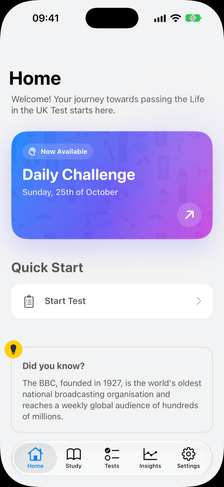
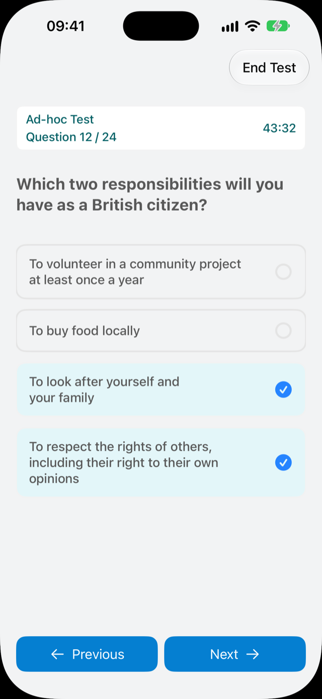
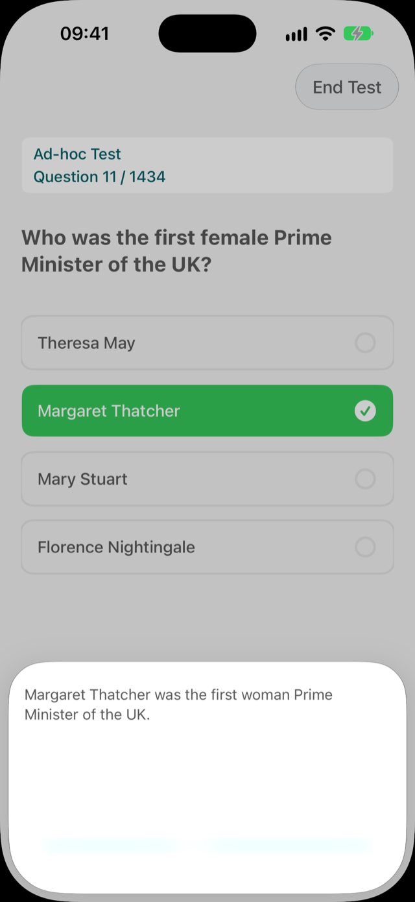
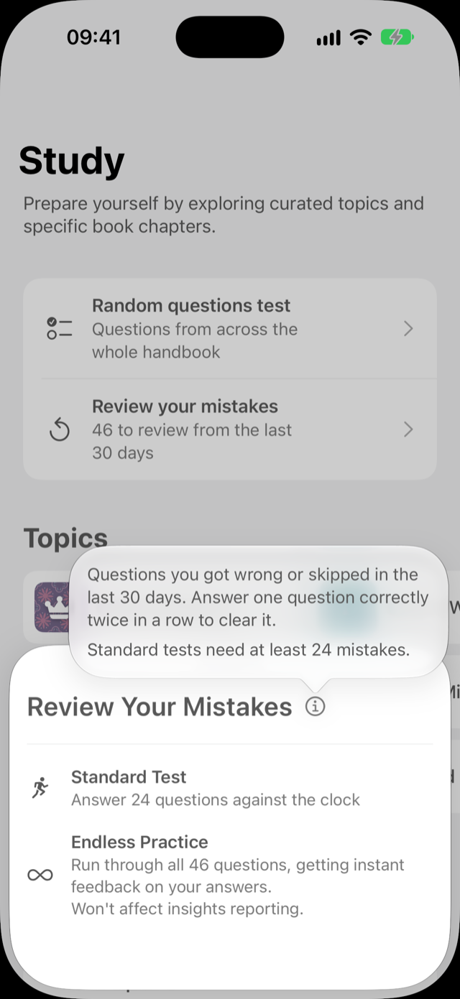
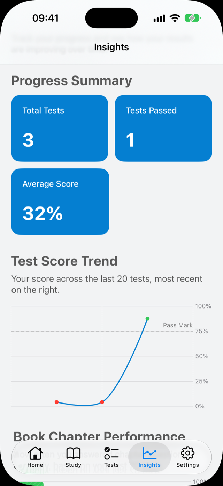

1,000+ practice questions
Exam-style questions covering the full official syllabus, from British history and the monarchy to Parliament, law and everyday life.
Over 1,000 exam-style questions, timed mock tests and clear explanations, all built from the official handbook. The calm, no-nonsense way to prepare for British citizenship and settlement.

Focused tools that cover the whole syllabus, without ads, accounts or distractions.
Exam-style questions covering the full official syllabus, from British history and the monarchy to Parliament, law and everyday life.
24 questions against a 45-minute clock with the same 75% pass mark as the real exam. Take as many as you like.
Questions are hand-sorted into focused topics, so you can drill one area at a time. Perfect for dates, kings and queens, and the facts that are easy to mix up.
See straight away whether you were right, with a clear explanation so the answer actually sticks.
Questions you miss or skip keep coming back until you get them right twice in a row.
See your scores by topic and over time, so you know exactly where to focus and when you are ready.
Designed to feel simple and calm, so revising never feels like a chore.

Mock tests mirror the official format, so nothing on the day comes as a surprise.

Every question comes with instant feedback and a short explanation based on the official handbook.

Mistakes review collects every question you missed or skipped and brings it back until you have truly learnt it.

Track your progress across every topic and build a steady habit with a short daily challenge.
Questions are organised around the five chapters of Life in the United Kingdom: A Guide for New Residents.
Democracy, the rule of law, tolerance and the responsibilities of living here.
The four nations, their geography and how the UK fits together.
From the Stone Age and Magna Carta to the World Wars and modern Britain.
Religion, customs, festivals, sport, the arts and British culture.
Parliament, elections, the courts and how to be an active citizen.
A simple routine of a few minutes a day is all it takes.
No account or sign-up needed. Open the app and start practising straight away.
Work through each chapter and read the explanations for anything you get wrong.
Sit full timed tests and review your mistakes until you pass comfortably every time.
Book your test on GOV.UK and walk in confident that you know the material.
Rated 4.7 out of 5 from 53 ratings on the UK App Store.
“Great looking app, easy to track my scores and progress. The topics definitely make it stand out from other apps.”
“This app was really useful to learn all the topics for the Test! Better than the official app!”
“Very useful app to practice my dates.”
Download for free and start practising today. Unlock premium features with a single in-app purchase, with no subscription.
Nothing between you and your revision. Just focused, effective preparation.
No account, email address or personal details needed. Just open the app and start.
Study anywhere, on the commute or abroad, even without an internet connection.
The Life in the UK Test is a computer-based test you usually need to pass when applying for Indefinite Leave to Remain or British citizenship. It has 24 multiple-choice questions, you have 45 minutes, and you need at least 18 correct answers (75%) to pass.
Questions are based on the official handbook, Life in the United Kingdom: A Guide for New Residents.
No one can legitimately offer the actual exam questions. The app contains over 1,000 exam-style questions written from the official handbook, covering every chapter of the syllabus, so you will be familiar with the kind of questions you will see on the day.
Yes. The question bank has been fully updated for 2026 and is based on the current official handbook.
The app is free to download and start practising. Premium features can be unlocked with a single in-app purchase. There is no subscription and there are no ads.
Yes. Everything works without an internet connection, so you can revise on the train, on a flight or anywhere with poor signal.
The app runs on iPhone (iOS 17 or later), iPad (iPadOS 17 or later) and on Macs with Apple silicon running macOS 14 or later. There is currently no Android version.
Yes. The app is fully supported on iPad, so you can revise on a bigger screen at home and on your iPhone when you are out. It requires iPadOS 17 or later.
Any question you get wrong or skip is added to your mistakes list. In review mode those questions keep coming back until you answer each one correctly twice in a row, so weak spots turn into strengths.
No. Life in the UK: Test Practice is an independent study app and is not affiliated with or endorsed by the Home Office or UK Government. You book the real test through the official GOV.UK website.
Join thousands of people preparing for British citizenship with Life in the UK: Test Practice.